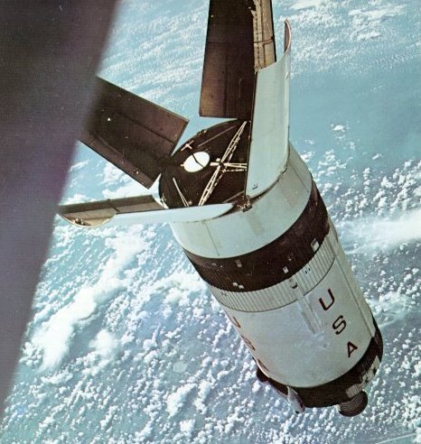
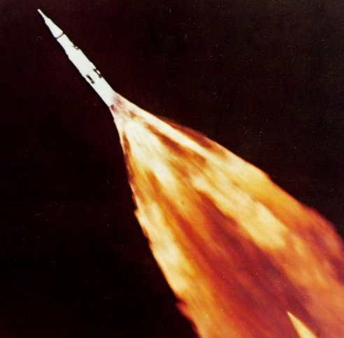
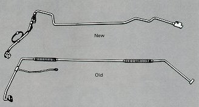

|  |
| Lifeless and slowly tumbling, the S-IB stage that put Apollo 7 in orbit gave Astronauts Schirra, Eisele, and Cunningham man's first ride atop a load of liquid hydrogen. Now the spent 59-foot stage served as a passive target for practice in rendezvous, with one run starting from a distance of 80 miles. |
|  |
| A fiery exhaust plume trails Apollo 6 during the first stage of launch. Second-stage burn was marred by premature shutdown of three of the five J-2 engines, causing the craft to enter an elliptical rather than a circular orbit. Many months of technical detective work identified the bellows in one liquid hydrogen fuel line (bottom) as the culprit. In flight the bellows had flexed excessively, cracked, and leaked fuel. A redesigned fuel line substituted specially placed bends for the bellows. |
|  |